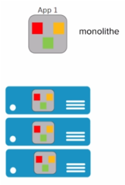

1.0 Introduction
Ce cours est découpé en différent chapitre et permet un apprentissage progressif des différents concepts et de leur mise en pratique. On commencera par donner quelques exemples de ce qu’il est possible de faire avec Docker dans la section « Quick Wins ». Nous ferons références à des concepts utiles comme les conteneurs Linux, de Micro services, de Dev Ops.etc. Nous aurons un chapitre sur la plateforme Docker, son architecture, son fonctionnement et sa mise en place. Nous verrons comment Docker rend très simple la manipulation des containeurs. Nous parlerons de la notion d’images qui permet de packager une application et ses dépendances. Dans le chapitre sur le stockage, nous apprendrons à utiliser Docker pour que les données puissent persister dans les conteneurs.
On parlera de
Docker Machine pour créer des hôtes Docker.
Docker compose qui permet de créer des applications en multi conteneur.
Docker Swarm la solution d’orchestration de Docker qui permet de gérer des applications qui tournent dans des conteneurs.
La partie réseau dans Docker.
Eléments de sécurité qui entrent en jeu.
Note
Prérequis : Installation de WSL 2 sur windows 10. Afin de pouvoir utiliser des commandes linux dans une console POWERSHELL.
wsl –install -d ubuntu wsl --set-version ubuntu 2
Dans la console, tapez : ubuntu pour basculer dans un environnement Ubuntu.
1.1 Quick Wins
Très souvent le premier contact que l’on a avec Docker s’effectue via le Docker Hub accessible sur https://hub.docker.com .

Il s’agit d’un registre (ou registry) dans lequel nous retrouvons beaucoup d’applications packagées dans des images Docker. Cette notion d’image est la base de ce qu’apporte Docker. Voici un exemple de services qui peuvent être contenu dans une image Docker :

Par exemple, grâce à Docker nous pouvons lancer un interpréteur interactif (REPL) pour des langages de programmation comme le Python, le Ruby On Rail ou le Javascript.

Nous avons alors accès à un environnement Python en interactif et c’est le flag -ti qui permet l’interactivité avec le processus du containeur.
De la même manière, nous pouvons lancer un environnement NodeJs, ici contenant le Tag 8.12-alpine.
8.12 est la version de NodeJs et alpine est le nom de la distribution Linux utilisée dans le container.
Par exemple si nous avons besoin d’une base de données MongoDB dans la version 4.0.Nous n’avons qu’à trouver une image disponible dans le Docker Hub.

On peut imaginer avoir besoin de lancer plusieurs containers MongoDB avec des versions différentes. Cela peut être utile pour tester une différence de comportement entre deux versions par exemple.
1.2 Des Stacks complètes
Une application fonctionne rarement seule et est souvent constituée d’un ensemble de services. Cet ensemble constitue une Stack applicative. Par exemple, prenons le cas de la Stack Elastic, qui est souvent utilisée pour la gestion des log. Elle est constituée de BEATS et LOGSTASH qui est là pour l’ingestion des logs, de ELASTICSEARCH pour l’analyse et le stockage des logs et KIBANA qui permet de visualiser tout cela.

Il existe une multitude d’applications prêtent à être utilisée avec Docker, accessible en ligne de commande. Nous verrons rapidement comment Docker permet de créer notre propre package d’application pour faciliter : l’installation, l’utilisation et le déploiement.
1.3 Quelques concepts utiles pour les Développeurs
1.3.1 Un container Linux, c’est quoi ?
Un container est simplement un processus particulier qui tourne sur le système. Il est isolé des autres processus. Il possède sa propre vision du système sur lequel il tourne, on appelle cela les Namespaces. On peut limiter les ressources utilisées par ce processus en utilisant les Controls Groups (ou Cgroups). Le même système peut exécuter plusieurs containers en même temps, c’est d’ailleurs ce qui constitue l’avantage de cette technologie. Le noyau Linux de la machine hôte est partagé entre tous ses containeurs.
1.3.2 Containers Linux : Les Namespaces
Les Namespaces sont des technologies Linux qui servent à isoler un processus. Cela permet de limiter ce qu’un processus peut voir. Il existe 6 NameSpaces différents :
Pid : Permet de donner à un processus la vision de lui-même et de ses processus enfant.
Net : Permet de donner au processus son propre réseau privé.
Mount : Permet de donner au processus un système de fichiers privé.
Uts : Permet la gestion du nom de l’hôte.
Ipc : Isole les communications inter processus.
User : permet de faire un mapping entre les utilisateurs de l’hôte et les containeurs.
1.3.2 Containers Linux : Control Groups (cgroups)
Il s’agit d’une autre technologie Linux qui va permettre de limiter les ressources qu’un processus va utiliser. Par exemple, pour limiter l’utilisation :
RAM
CPU
I/O (périphériques d’entrées et de sorties)
Réseau
1.3.3 Containers Linux : VM/Container

On compare souvent les containers à des machines virtuelles, car elles permettent d’exécuter des applications de manière isolée.
Mais là où la virtualisation nécessite un hyperviseur qui s’exécute sur le système d’exploitation de l’hôte et nécessite également que chaque machine virtuelle ait son propre système d’exploitation.
L’approche du container est beaucoup plus légère car chacun partage le Kernel Linux de la machine hôte.
La machine virtuelle consomme plus de disque mémoire et de ram que les containers. Cela implique que beaucoup plus de containers peuvent fonctionner sur une même machine hôte.
1.3.4 Architecture micro-services
Depuis quelques années, les applications sont développées autour d’une architecture appelée « micro-services ». Alors qu’avant une application était souvent un gros bloc unique « monolithique ».

Aujourd’hui, une application est constituée de plusieurs petits composants qui sont des services qui ont leur propre rôle et fonctionnalité. Et c’est l’interconnexion de l’ensemble de ses services qui permettent de définir l’application globale.
Dans une application monolithique : Généralement si l’on veut que plusieurs instances de l’application soient déployées il faut créer plusieurs machines virtuelles contenant l’application dans son entièreté.

Alors que dans le contexte d’une application micro-services chaque service peut être déployé indépendamment des autres services, nous avons plusieurs machines virtuelles sur lesquelles les services des différentes applications sont dispatchées.
Exemple d’architecture micro-services : l’application UBER

Chaque processus métier est isolé dans un service :
Paiement
Notification
Facturation
Avantages de l’architecture micro-services ?
Découpage de l’application en processus (services) indépendants. Chacun a sa propre responsabilité métier. Equipe dédiée pour chaque service. Plus de liberté de choix de langage. Mise à jour. Containers très adaptés pour les micro-services. Inconvénients :
Nécessite des interfaces bien définies. Focus sur les tests d’intégration. Déplace la complexité dans l’orchestration de l’application globale. (Docker SWARM ou Kubernetes).